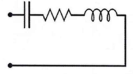
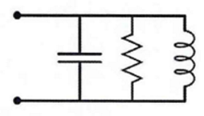

5. 负载短路 λ/4 和开路 λ/2 传输线可等效为并联LCR谐振腔¶
在 Sec.4 的输出结果中可以看到： short 和 open 阻抗曲线仅相差 \(\lambda/4\) ， 且\(\lambda(1/4+1/2k)\) 处的 short 和 \(\lambda(1/2+1/2k)\) 处的 open 都具有并联 LCR 阻抗特性，接下来具体分析。
串联型LCR阻抗：Z=R+iwL+1/iwC;

并联型LCR阻抗：Z=1/(1/R+1/iwL+iwC);

对于短路 λ/4 传输线：\(Z_l=0, λ/4 = πv/2ω_r\)；
! 考虑有损耗的情况：α≠0；
其中 \(v=c_0/\sqrt{(\epsilon_{sub}+1)/2}\) （??? from wang th p33，存疑）
\[ Z_{in}^{\lambda/4}=Z_0 \tanh{[i(\pi/2+\pi\Delta\omega/2\omega_r)+\alpha \pi\nu/2\omega_r]} \]当损耗很小α≈0；在谐振频率附近 \(Δω/ω_r≈0\)；
\[ Z_{in}^{\lambda/4}=Z_0/(\alpha\pi\nu/2\omega_r+i\pi\Delta\omega/2\omega_r) \]等效并联LCR：\(C=\pi/(4\omega_r Z_0), L=1/(\omega^2_rC)=4Z_0/\pi\omega_r\)
对于开路 λ/2 传输线：\(Z_l→\infty, λ/2 = πv/ω_r\)；
\[ Z_{in}^{\lambda/2}=Z_0/(\alpha\pi\nu/2\omega_r+i\pi\Delta\omega/\omega_r) \]等效并联LCR：\(C=\pi/(2\omega_r Z_0), L=1/(\omega^2_rC)=2Z_0/\pi\omega_r\)
e.g. 计算CPW长度（波长）
将共面波导的长度设计为波长的四分之一，衬底为高阻硅。
6.5GHz 的四分之一共面波导的长度为 4543.2um。
import numpy
# 短路lambda/4传输线的电容、电感
def fun_lc_lamb4(wr0,z0):
lc4=[0,0]
wr=wr0*ghz # GHz
lc4[0]=4*z0/PI/wr/nm # L nH
lc4[1]=PI/4/wr/z0/fm # C fF
return lc4
# 开路lambda/2传输线的电容、电感
def fun_lc_lamb2(wr0,z0):
lc2=[0,0]
wr=wr0*ghz
lc2[0]=2*z0/PI/wr/nm
lc2[1]=PI/2/wr/z0/fm
return lc2
# 输入频率计算谐振波的波长
def fun_lamb(epsub,wr0):
wr=wr0*ghz
v=C/numpy.sqrt((epsub+1)/2)
# v=c0/numpy.sqrt(epsub*1) # ur=1
lamb=PI2*v/wr
return lamb/um # um
# z0=zz0(11.9,10,5,11.9,2,250,40)
# print("阻抗：", z0)
wr=PI2*6.5
z0=50
print("6.5GHz, 50ohm")
print("\n短路1/4波长, 长度: ", fun_lamb(11.9,wr)/4, "um")
print("电感: ", fun_lc_lamb4(wr,z0)[0], "nH, 电容：", fun_lc_lamb4(wr,z0)[1], "fF")
print("\n开路1/2波长, 长度: ", fun_lamb(11.9,wr)/2, "um")
print("电感: ", fun_lc_lamb2(wr,z0)[0], "nH, 电容：", fun_lc_lamb2(wr,z0)[1], "fF")
6.5GHz, 50ohm
短路1/4波长, 长度: 4543.264793989372 um
电感: 1.5587874406513502 nH, 电容： 384.6153846153846 fF
开路1/2波长, 长度: 9086.529587978745 um
电感: 0.7793937203256751 nH, 电容： 769.2307692307692 fF